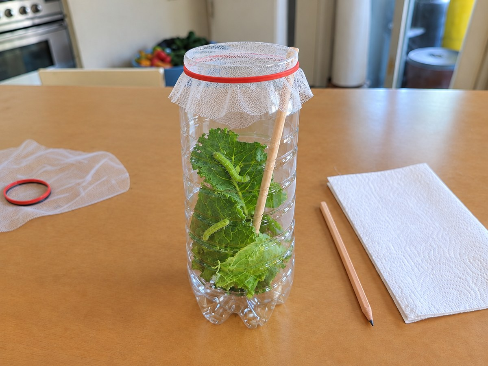

전체 단원 › 실험·활동 › 3~4학년 과학
페트병 배추흰나비 관찰통

배추 잎에서 찾은 애벌레를 페트병 집에서 키우며 알, 애벌레, 번데기, 나비로 변하는 한살이를 지켜봐요.
만들기 20분 · 관찰 3~4주 · 난이도 ★★☆ 보통
준비물
- 2L 투명 페트병 — 윗부분을 잘라 내 관찰통으로 써요
- 양파망이나 거즈 — 입구를 덮어 공기는 통하고 애벌레는 못 나가게. 고무줄 1개로 묶고, 바닥에 깔 키친타월도 준비해요
- 배추흰나비 애벌레 — 텃밭 배추·케일 잎 뒷면에서 찾거나 관찰 세트로 구해요
- 싱싱한 배추·케일 잎 — 애벌레 먹이. 농약이 묻지 않은 잎이어야 해요
- 나무젓가락 1개 — 번데기가 붙을 자리예요
- 관찰 일지 도안 — 아래에서 내려받아요
실험 방법
- 관찰통 만들기
페트병 윗부분을 잘라 내고, 바닥에 키친타월을 깔아요. 나무젓가락을 비스듬히 세워 넣어요. - 애벌레 옮기기
애벌레가 붙은 잎째로 옮겨요. 손으로 직접 잡으면 다칠 수 있어요. - 입구 덮기
양파망이나 거즈를 씌우고 고무줄로 묶어요. 햇빛이 바로 드는 곳은 피해요. - 매일 먹이와 청소
하루 한 번 시든 잎과 똥을 치우고 새 잎을 넣어요. 잎에 물방울이 많으면 닦아 줘요. - 관찰 일지 쓰기
크기, 색, 움직임을 날짜별로 그리고 적어요. 번데기가 되면 건드리지 말고 기다려요. - 나비 날려 보내기
나비가 나와 날개가 마르면 밖에 나가 날려 보내 줘요.
관찰해 봐요
- 애벌레는 허물을 몇 번 벗나요? 벗을 때마다 무엇이 달라지나요?
- 번데기일 때는 먹지도 움직이지도 않는데, 안에서는 무슨 일이 생길까요?
- 애벌레와 나비는 먹는 것이 어떻게 다를까요?
왜 그럴까?
배추흰나비는 알에서 깨어나 애벌레가 되고, 배추 잎을 먹으며 몇 번 허물을 벗고 자라요. 다 자라면 번데기가 되어 한동안 꼼짝하지 않다가, 어느 날 껍질을 뚫고 나비가 되어 나와요. 이렇게 알에서 어른이 되기까지의 과정을 한살이라고 해요.
학교 교육과정 연결
- [4과04-01] 동물의 한살이를 직접 관찰하고, 관찰한 내용을 글과 그림으로 표현할 수 있다.